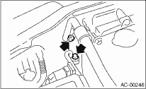
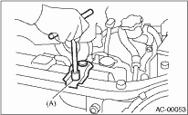
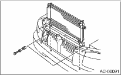

1. Using the refrigerant recovery system, discharge refrigerant. 
2. Disconnect the ground cable from the battery.
3. Disconnect the pressure hose and pipe from the condenser.

4. Remove the radiator bracket (A).

5. Remove two bolts. While lifting the condenser, pull out through space between the radiator and the radiator panel.

CAUTION:
Be careful not to damage the radiator fins and condenser fins. If a damaged fin is found, repair it using a thin screwdriver.
If the condenser is replaced, add appropriate amount of compressor oil to the compressor.